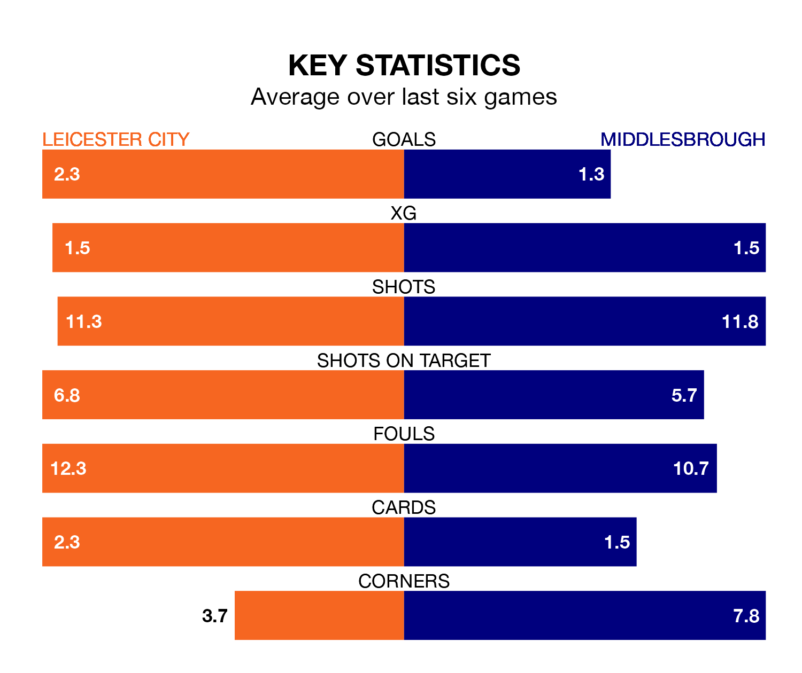

Leicester City are heavy favourites to keep all three points at home in Saturday's kick-off against Middlesbrough.
The Foxes, who sit top of EFL Championship with 32 games played, are priced at 1.5 to seal victory at the King Power Stadium.
Sitting 12 places and 37 points behind them in the table, Middlesbrough are 4.8 to win with *Betting Company*, while the draw is at 4.2.
With 68 goals in 32 games so far this season, Leicester are the league's highest scorers with 2.1 goals per game. And they are conceding fewer than average, letting in 24 goals at a rate of 0.8 per game.
Middlesbrough are also above average scorers, with 1.5 goals per game, compared to a league average of 1.4. They have also conceded 1.5 goals per game.
With Mads Hermansen between the sticks, City can rely on one of the league's safest pair of hands. He has kept 11 clean sheets in his 31 appearances this season, and only two other 'keepers – West Bromwich Albion's Alex Palmer and Leeds United's Illan Meslier – have been able to prevent the opposition scoring on more occasions in EFL Championship.
In the Boro's net, Timothy Dieng has five clean sheets in 22 games. He has conceded a goal every 64 minutes, more than twice as often as the 147 minutes between goals for Hermansen.
The Foxes are in good form in EFL Championship, with four wins and a draw from their last six games.
With a win and two draws over that period, the away side's form is much worse – they have taken five points from 18, compared to the hosts' 13.
Leicester's last match was on Tuesday, a 2-0 win against Sheffield Wednesday, with Issahaku Abdul Fatawu and Jamie Vardy getting the goals for the Foxes.
Middlesbrough lost 2-1 against Preston North End last time out, on Wednesday, with Finn Azaz on the scoresheet.
Saturday's match will be refereed by Chris Kavanagh, who has taken charge of one EFL Championship game so far this season. He has not awarded any penalties.
He is yet to oversee a match featuring either Leicester or Middlesbrough this season.
Updated: 12:06 (UTC), 15/02/24